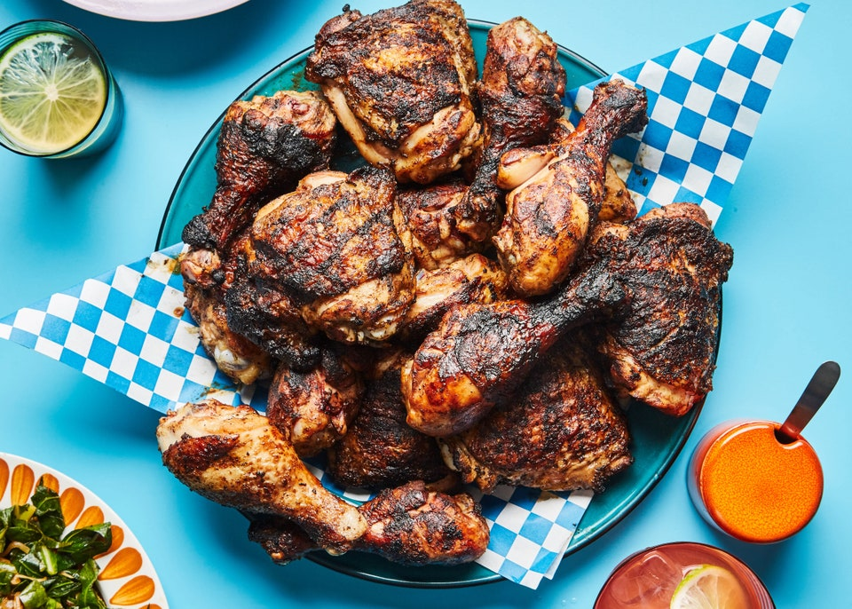

Jerk Chicken

Description
Do you like heat? As in chili heat? If you do, then jerk chicken is
made for you. This is a dish popular in Jamaica and throughout the
Caribbean. Jerk seasoning is based on two main ingredients: Scotch
Bonnet chili peppers (or habaneros) and allspice.
Ingredients
- 1/2 cup malt vinegar (or white vinegar)
- 2 tablespoons dark rum
- 2 Scotch bonnet peppers (or habaneros), with seeds, chopped
- 1 red onion, chopped
- 4 green onion tops, chopped
-
1 tablespoon dried thyme or 2 tablespoons fresh thyme leaves, chopped
- 2 tablespoons extra virgin olive oil
- 2 teaspoons salt
- 2 teaspoons freshly ground black pepper
- 4 teaspoons ground allspice
- 4 teaspoons ground cinnamon
- 4 teaspoons ground nutmeg
- 4 teaspoons ground ginger
- 2 teaspoons molasses
- 1/2 cup lime juice
- 1 (5 to 6 pound) chicken, cut in half lengthwise
- Kosher salt and freshly ground pepper
Directions
-
Put the vinegar, rum, hot peppers, onion, green onion tops, thyme, olive
oil, salt, pepper, allspice, cinnamon, nutmeg, ginger, and molasses into
a blender. Pulse until mostly smooth.
-
Place the chicken in a large freezer bag, or in a large non-reactive
bowl or baking dish. Pour lime juice over the chicken and coat well. Rub
the jerk paste over the chicken pieces and coat well (it helps to use
gloves!). Seal the bag or cover the chicken in the pan with plastic
wrap. Refrigerate overnight.
-
When you are ready to cook the chicken, remove chicken from the marinade
bag or pan. Put the remaining marinade into a small saucepan. Bring to a
boil, reduce heat and simmer for 10 minutes. Set aside to use as a
basting sauce for the chicken. If you want you can reserve a little of
the marinade (once boiled for 10 minutes since it has been in contact
with raw chicken) to serve with the chicken or to mix with some ketchup
and a dash of soy sauce for a serving sauce.
-
Preheat grill to medium high. Sprinkle chicken halves with salt and
pepper. Place chicken halves, skin side down on the grill grates. Cover.
Cook for about 40-50 minutes, keeping the internal grill temperature
between 350°F and 400°F, turning the chickens occasionally and basting
with marinade, until the chicken halves are cooked through. The chicken
is done when the juices run clear (not pink) when a knife tip is
inserted into both the chicken breast and thigh, about 165°F for the
breast and 170°F for the thigh when checked with a meat thermometer.
Transfer chicken to platter. Tent loosely with foil to keep warm and let
stand 15 minutes.